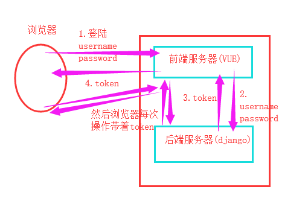

1. 局部认证组件
我们知道，我们不管路由怎么写的，对应的视图类怎么写的，都会走到dispatch方法，进行分发，
在咱们看的APIView类中的dispatch方法的源码中，有个self.initial(request, *args, **kwargs)，那么认证、权限、频率这三个默认组件都在这个方法里面了，如果我们自己没有做这三个组件的配置，那么会使用源码中默认的一些配置。进源码去看看你就会看到下面三个东西：
# Ensure that the incoming request is permitted
#实现认证
self.perform_authentication(request)
#权限判断
self.check_permissions(request)
#控制访问频率
elf.check_throttles(request)目前为止大家知道的认证机制是不是有cookie、session啊，session更安全一些，但是你会发现session的信息都存到咱们的服务器上了，如果用户量很大的话，服务器压力是比较大的，并且django的session存到了django_session表中，不是很好操作，但是一般的场景都是没有啥问题的，现在生产中使用的一个叫做token机制的方式比较多，现在我们是不是就知道个csrf_token啊，其实token有很多种写法，如何加密，你是hashlib啊还是base64啊还是hmac啊等，是不是加上过期时间啊，是不是要加上一个secret_key(客户端与服务端协商好的一个字符串，作为双方的认证依据)，是不是要持续刷新啊(有效时间要短，不断的更新token，如果在这么短的时间内还是被别人拿走了token，模拟了用户状态，那这个基本是没有办法的，但是你可以在网络或者网络设备中加安全，存客户的ip地址等，防黑客)等等。
大致流程图解：

首先我们需要创建一个表，用户表，里面放一个token字段，其实一般我都是放到两个表里面，和用户表是一个一对一关系的表，看代码：
################################# user表 ###############################
class User(models.Model):
user = models.CharField(max_length=32)
pwd = models.CharField(max_length=32)
type_choice=((1,"VIP"),(2,"SVIP"),(3,"SSVIP"))
user_type = models.IntegerField(choices=type_choice)
class UserToken(models.Model):
user = models.OneToOneField(to=User) #一对一到用户表
token = models.CharField(max_length=128) #设置的长度大一些
# expire_time = models.DateTimeField() #如果做超时时间限制，可以在这里加个字段来搞，这里我没有写昂，简单搞了urls.py内容如下：
#登陆认证接口
url(r'^login/$', views.LoginView.as_view(),), #别忘了$符号结尾views.py内容如下：自己写一个每次登陆成功之后刷新token值
###################login逻辑接口#######################
#关于逻辑接口而不是提供数据的接口，我们不用ModelViewSet，而是直接写个类，继承APIView，然后在类里面直接写咱的逻辑
import uuid
import os
import json
class LoginView(APIView):
#从前后端分离的项目来讲，get请求不需要写，因为get就是个要登陆页面的操作，vue就搞定了，所以我们这里直接写post请求就可以了
def post(self,request):
# 一般，请求过来之后，我们后端做出的响应，都是个字典，不仅包含错误信息，还有要状态码等，让客户端明白到底发生了什么事情
# 'code'的值，1表示成功，0表示失败,2表示其他错误(自己可以做更细致的错误代码昂)
res = {'code': 1, 'msg': None, 'user': None,'token':None}
print(request.data)
try:
user = request.data.get('user')
pwd = request.data.get('pwd')
# 数据库中查询
user_obj = models.User.objects.filter(user=user, pwd=pwd).first()
if user_obj:
res['user'] = user_obj.user
# 添加token，用到咱们usertoken表
# models.UserToken.objects.create(user=user,token='123456')
# 创建token随机字符串，我写了两个方式，简写的昂，最好再加密一下
random_str = uuid.uuid4()
# random_str = os.urandom(16) bytes类型的16位的随机字符串
models.UserToken.objects.update_or_create(
user=user_obj, # 查找筛选条件
defaults={ # 添加或者更新的数据
"token": random_str,
}
)
res['token'] = random_str
res['msg'] = '登陆成功'
else:
res['code'] = 0
res['msg'] = '用户名或者密码错误'
return Response(res)
except Exception as e:
res['code'] = 2
res['msg'] = str(e)
return Response(res)通过上面的代码我们将token返回给了用户，那么以后用户不管发送什么请求，都要带着我给它的token值来访问，认证token通过才行，并且更新token。
下面我们玩一下drf提供的认证组件的玩法。
DRF的认证组件
将来有些数据接口是必须要求用户登陆之后才能获取到数据，所以将来用户登陆完成之后，每次再过来请求，都要带着token来，作为身份认证的依据。
from app01.serializer import BookSerializers
#####################Book表操作##########################
class UserAuth():
def authenticate_header(self,request):
pass
#authenticate方法固定的,并且必须有个参数，这个参数是新的request对象，不信，看源码
def authenticate(self,request):
if 1:
#源码中会发现，这个方法会有两个返回值，并且这两个返回值封装到了新的request对象中了，request.user-->用户名 和 request.auth-->token值，这两个值作为认证结束后的返回结果
return "chao","asdfasdfasdf"
class BookView(APIView):
#认证组件肯定是在get、post等方法执行之前执行的，还记得源码的地方吗，这个组件是在dispatch的地方调用的,我们是上面写个UserAuth类
authentication_classes = [UserAuth,] #认证类可以写多个，一个一个的顺序验证
def get(self,request):
'''
查看所有书籍
:param request:
:return:
'''
#这样就拿到了上面UserAuth类的authenticate方法的两个返回值
print(request.user)
print(request.auth)
book_obj_list = models.Book.objects.all()
s_books = BookSerializers(book_obj_list,many=True)
return Response(s_books.data) def _authenticate(self):
"""
Attempt to authenticate the request using each authentication instance
in turn.
"""
for authenticator in self.authenticators:
try:
user_auth_tuple = authenticator.authenticate(self)
except exceptions.APIException:
self._not_authenticated()
raise
if user_auth_tuple is not None:
self._authenticator = authenticator
#值得注意的是，self是APIView封装的新的request对象
self.user, self.auth = user_auth_tuple
return #退出了这个函数，函数就不会执行了，不会再循环了，所以如果你的第一个认证类有返回值，那么第二个认证类就不会执行了，所以别忘了return是结束函数的意思，所以如果你有多个认证类，那么返回值放到最后一个类里面好，我们写一写获取token值，然后校验的功能，看views.py的代码：
from django.shortcuts import render,HttpResponse,redirect
from django.views import View
from rest_framework import serializers
from app01 import models
from rest_framework.views import APIView
from rest_framework.response import Response
#将序列化组件都放到一个单独的文件里面，然后引入进来
from app01.serializer import BookSerializers,PublishSerializers,AuthorSerializers
#drf提供的认证失败的异常
from rest_framework.exceptions import AuthenticationFailed
class UserAuth():
#每个认证类，都需要有个authenticate_header方法，并且有个参数request
def authenticate_header(self,request):
pass
#authenticate方法固定的,并且必须有个参数，这个参数是新的request对象，不信，看源码
def authenticate(self,request):
# token = request._request.GET.get("token")
#由于我们这个request是新的request对象，并且老的request对象被封装到了新的request对象中，名字是self._request，所以上面的取值方式是没有问题的，不过人家APIView不仅封装了老的request对象，并且还给你加了query_params属性，和老的request.GET得到的内容是一样的，所以可以直接按照下面的方式来写
token = request.query_params.get("token")
#用户请求来了之后，我们获取token值，到数据库中验证
usertoken = models.UserToken.objects.filter(token=token).first()
if usertoken:
#验证成功之后，可以返回两个值，也可以什么都不返回
return usertoken.user.user,usertoken.token
#源码中会发现，这个方法会有两个返回值，并且这两个返回值封装到了新的request对象中了，request.user-->用户名 和 request.auth-->token值，这两个值作为认证结束后的返回结果
else:
#因为源码内部进行了异常捕获，并且给你主动返回一个forbiden错误，所以我们在这里主动抛出异常就可以了
raise AuthenticationFailed("认证失败")urls.py内容如下：
url(r'^books/$', views.BookView.as_view(),),通过postman发送请求，你会发现错误：
如果我们请求中带了数据库中保存的token值，那么就会成功获取数据，看数据库中的token值：
然后通过postman再请求，带着token值，看效果，成功了：
继承drf的BaseAuthentication认证类的写法：
from app01 import models
from rest_framework.views import APIView
from rest_framework.response import Response
#将序列化组件都放到一个单独的文件里面，然后引入进来
from app01.serializer import BookSerializers,PublishSerializers,AuthorSerializers
#drf提供的认证失败的异常
from rest_framework.exceptions import AuthenticationFailed
from rest_framework.authentication import BaseAuthentication
#继承drf的BaseAuthentication类
class UserAuth(BaseAuthentication):
# 继承了BaseAuthentication类之后，这个方法就不用写了
# def authenticate_header(self,request):
# pass
def authenticate(self,request):
# token = request._request.GET.get("token")
token = request.query_params.get("token")
#有request对象，那么不仅仅可以认证token，还可以认证请求里面的其他内容
usertoken = models.UserToken.objects.filter(token=token).first()
if usertoken:
#验证成功之后
return usertoken.user.user,usertoken.token
else:
raise AuthenticationFailed("认证失败")
class BookView(APIView):
#通过源码看，认证类的查找过程，和解析组件的查找过程是一样的
authentication_classes = [UserAuth,]
def get(self,request):
'''
查看所有书籍
:param request:
:return:
'''
print(request.user)
print(request.auth)
book_obj_list = models.Book.objects.all()
s_books = BookSerializers(book_obj_list,many=True)
return Response(s_books.data)带时间戳的随机字符串：
def get_random_str(user):
import hashlib,time
ctime=str(time.time())
md5=hashlib.md5(bytes(user,encoding="utf8"))
md5.update(bytes(ctime,encoding="utf8"))
return md5.hexdigest()全局视图认证组件：
在settings.py文件中配置：如果我再app01文件夹下的service文件夹下的auth文件夹下写了我们自己的认证类，那么全局配置的写法就按照下面的方式写。
REST_FRAMEWORK={
"DEFAULT_AUTHENTICATION_CLASSES":["app01.service.auth.Authentication",] #里面是路径字符串
}认证组件就说这些，看权限组件吧。
局部视图权限：
在app01.service.permissions.py中
from rest_framework.permissions import BasePermission
class SVIPPermission(BasePermission):
message="SVIP才能访问!" #变量只能叫做message
def has_permission(self, request, view): #重写has_permission方法，自己写权限逻辑，看看源码就明白了，这个view是咱当前类的实例化对象，一般用不到，但是必须给个参数写在这里。
if request.user.user_type==3:
return True #通过权限
return False #没有通过在views.py：
from app01.service.permissions import *
class BookViewSet(generics.ListCreateAPIView):
permission_classes = [SVIPPermission,]
queryset = Book.objects.all()
serializer_class = BookSerializers全局视图权限：
settings.py配置如下：
REST_FRAMEWORK={
"DEFAULT_AUTHENTICATION_CLASSES":["app01.service.auth.Authentication",],
"DEFAULT_PERMISSION_CLASSES":["app01.service.permissions.SVIPPermission",]
}局部视图throttle，反爬，防攻击
在throttles.py中：
from rest_framework.throttling import BaseThrottle,SimpleRateThrottle
import time
from rest_framework import exceptions
visit_record = {}
class VisitThrottle(BaseThrottle):
# 限制访问时间
VISIT_TIME = 10
VISIT_COUNT = 3
# 定义方法 方法名和参数不能变
def allow_request(self, request, view):
# 获取登录主机的id
id = request.META.get('REMOTE_ADDR')
self.now = time.time()
if id not in visit_record:
visit_record[id] = []
self.history = visit_record[id]
# 限制访问时间
while self.history and self.now - self.history[-1] > self.VISIT_TIME:
self.history.pop()
# 此时 history中只保存了最近10秒钟的访问记录
if len(self.history) >= self.VISIT_COUNT:
return False
else:
self.history.insert(0, self.now)
return True
def wait(self):
return self.history[-1] + self.VISIT_TIME - self.now在views.py中：
from app01.service.throttles import *
class BookViewSet(generics.ListCreateAPIView):
throttle_classes = [VisitThrottle,]
queryset = Book.objects.all()
serializer_class = BookSerializers全局视图throttle
REST_FRAMEWORK={
"DEFAULT_AUTHENTICATION_CLASSES":["app01.service.auth.Authentication",],
"DEFAULT_PERMISSION_CLASSES":["app01.service.permissions.SVIPPermission",],
"DEFAULT_THROTTLE_CLASSES":["app01.service.throttles.VisitThrottle",]
}
内置throttle类
在throttles.py修改为：
class VisitThrottle(SimpleRateThrottle):
scope="visit_rate"
def get_cache_key(self, request, view):
return self.get_ident(request)
settings.py设置：
REST_FRAMEWORK={
"DEFAULT_AUTHENTICATION_CLASSES":["app01.service.auth.Authentication",],
"DEFAULT_PERMISSION_CLASSES":["app01.service.permissions.SVIPPermission",],
"DEFAULT_THROTTLE_CLASSES":["app01.service.throttles.VisitThrottle",],
"DEFAULT_THROTTLE_RATES":{
"visit_rate":"5/m",
}
}
帮我们自动生成4个url，和我们自己写的差不多：
from django.conf.urls import url,include
from django.contrib import admin
from app01 import views
from rest_framework import routers
router = routers.DefaultRouter()
#自动帮我们生成四个url
router.register(r'authors', views.AuthorView)
router.register(r'books', views.BookView)
urlpatterns = [
# url(r'^books/$', views.BookView.as_view(),), #别忘了$符号结尾
# url(r'api/', include(router.urls)),
url(r'', include(router.urls)), #http://127.0.0.1:8000/books/ 也可以这样写：http://1270.0..1:8000/books.json/
#登陆认证接口
url(r'^login/$', views.LoginView.as_view(),), #别忘了$符号结尾
]
但是有个前提就是，我们用的是：ModelViewSet序列化组件。
from rest_framework.viewsets import ModelViewSet
class AuthorView(ModelViewSet):
queryset = models.Author.objects.all()
serializer_class = AuthorSerializers
class BookView(ModelViewSet):
queryset = models.Book.objects.all()
serializer_class = BookSerializers
所以，这个url注册器其实并没有那么好用，当然啦，看需求.
简单看看就行啦：
from rest_framework.viewsets import ModelViewSet
from rest_framework.renderers import JSONRenderer,BrowsableAPIRenderer
#如果我们没有在自己的视图类里面配置，那么源码里面默认就用的这两个JSONRenderer,BrowsableAPIRenderer
#BrowsableAPIRenderer 是当客户端为浏览器的时候，回复的数据会自动给你生成一个页面形式的数据展示，一般开发的时候，都不用页面形式的
#JSONRenderer：回复的是json数据
class BookView(ModelViewSet):
# renderer_classes = [JSONRenderer,] #其实默认就是这个JSONRenderer，所以一般不用在这里配置了
queryset = models.Book.objects.all()
serializer_class = BookSerializers
简单使用：
#引入分页
from rest_framework.pagination import PageNumberPagination
class BookView(APIView):
# 通过源码看，认证类的查找过程，和解析组件的查找过程是一样的
# authentication_classes = [UserAuth,]
# throttle_classes = [VisitThrottle,]
def get(self,request):
'''
查看所有书籍
:param request:
:return:
'''
book_obj_list = models.Book.objects.all()
#创建分页器对象，PageNumberPagination类中除了PAGE_SIZE属性之外，还有个page属性，这个page属性是第几页，用法是http://127.0.0.1:8000/books/?page=1
pnb = PageNumberPagination()
#通过分页器对象的paginate_queryset方法进行分页，
paged_book_list = pnb.paginate_queryset(book_obj_list,request,)
#将分页的数据进行序列化
s_books = BookSerializers(paged_book_list,many=True)
return Response(s_books.data)
settings配置文件：
REST_FRAMEWORK={
# "DEFAULT_THROTTLE_RATES":{
# "visit_rate":"5/m",
# },
'PAGE_SIZE':5, #这是全局的一个每页展示多少条的配置，但是一般不用它，因为不同的数据展示可能每页展示的数量是不同的
}
如果我们不想用全局的page_size配置，我们自己可以写个类来继承分页类组件，重写里面的属性：
#引入分页
from rest_framework.pagination import PageNumberPagination
class MyPagination(PageNumberPagination):
page_size = 3 #每页数据显示条数
page_query_param = 'pp' #http://127.0.0.1:8000/books/?pp=1,查询哪一页的数据
page_size_query_param = 'size' #如果我们显示的一页数据不够你用的，你想临时的多看展示一些数据，可以通过你设置的这个page_size_query_param作为参数来访问：http://127.0.0.1:8000/books/?pp=2&size=5 #那么你看到的虽然是第二页，但是可以看到5条数据，意思是将page_size的数字临时扩大了，每页展示的数据就多了或者少了，看你的page_size_query_param设置的值
max_page_size = 10 #最大每页展示多少条，即便是你前端通过page_size_query_param临时调整了page_size的值，但是最大也不能超过我们设置的max_page_size的值
class BookView(APIView):
def get(self,request):
'''
查看所有书籍
:param request:
:return:
'''
book_obj_list = models.Book.objects.all()
pnb = MyPagination()
paged_book_list = pnb.paginate_queryset(book_obj_list,request,)
s_books = BookSerializers(paged_book_list,many=True)
return Response(s_books.data)
还有我们玩的继承了ModelViewSet类的试图类使用分页器的写法：
from rest_framework.viewsets import ModelViewSet
from rest_framework.pagination import PageNumberPagination
class MyPagination(PageNumberPagination):
page_size = 3
page_query_param = 'pp'
page_size_query_param = 'size'
max_page_size = 10
class BookView(ModelViewSet):
queryset = models.Book.objects.all()
serializer_class = BookSerializers
pagination_class = MyPagination #配置我们自己写的分页类
还有个偏移分页，了解一下就行了
from rest_framework.pagination import LimitOffsetPagination